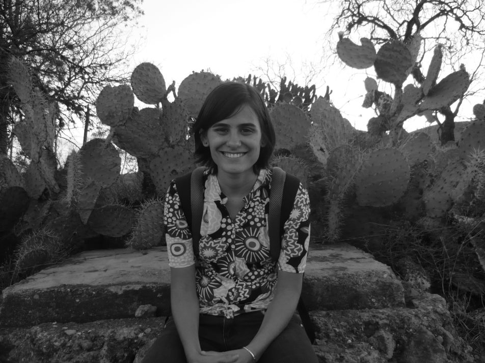

Professor - FCEN, UBA.
Researcher - CONICET
Functional data - statistics on Riemannian manifolds - directional data - nonparametric methods - robust estimation.
cv
web page was designed with Mobirise website templates